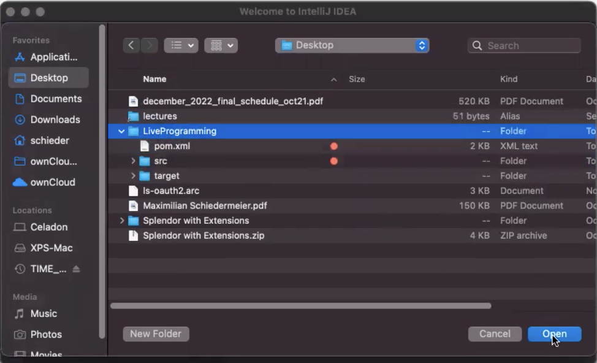
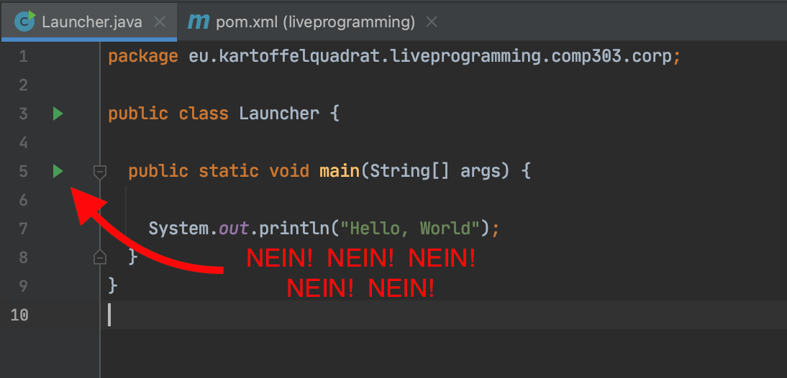
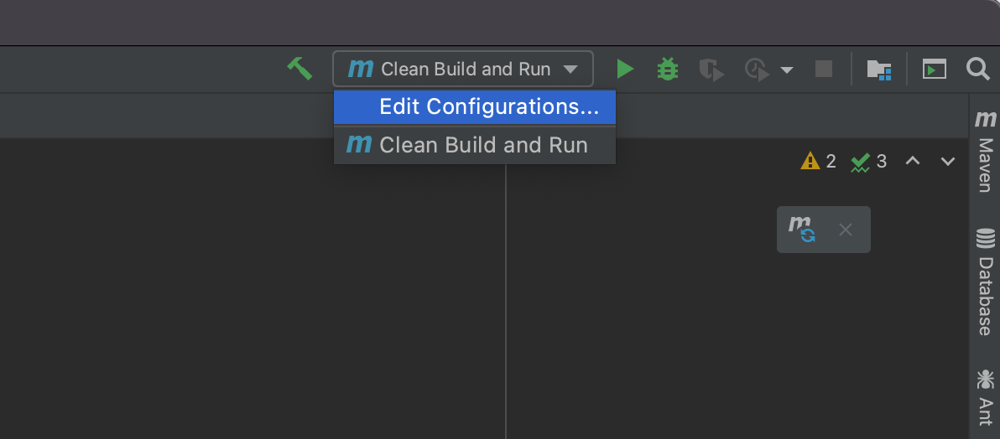
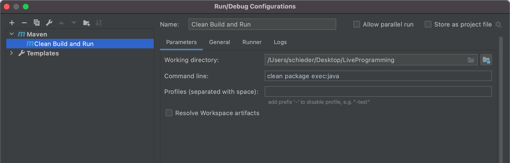
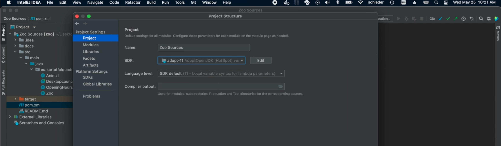
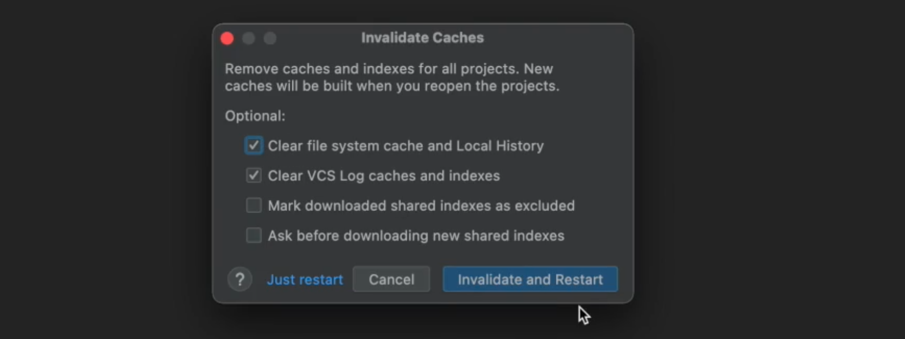

IDE Integration
In this module I show you how to correctly set up a maven project in IntelliJ IDEA.
While IntelliJ supports Maven projects out of the box, however there are a few pitfalls.
Open the right Folder
There are different ways to open a project, but the most reliable in my experience is to use the Open dialogue:
Next select the root folder of your maven project! Not src not any inner nested folder, select the root folder. That is the folder containing your pom.xml.

Give IntelliJ a moment to index your project, there is a little progress bar in the top right. Then you should be good to continue.
Link the pom File
The changes made to the pom.xml file might not be all be taken into account out of the box. If you see this popup in the top right corner, click the twirly arrows to keep your IDE in sync with the content of your pom.xml file.
Set up a Run Configuration
When you open a class with a main method, IntelliJ will display little green triangles on the side bar. DO NOT CLICK THOSE!

If you do, IntelliJ will interpret and run your code, but it will do so without taking into account any of your maven plugin configurations. This is not what you want, you might as well not use Maven then.
Instead set up your own Maven-based run configuration:
- Click the
Edit Configuration...button in the top right.
 - Add a Maven Configuration, use the desired run command, e.g.
clean package exec:java.
Note themvnkeyword is implicit here.

From here on the green triangle next to your custom run configuration automatically triggers the desired maven goals.
Troubleshoot
- Q: I open the project with IntelliJ, but everything is underlined in red.
A: The projet was not correctly opened. There are multiple potential fixes:
Option 1) Reloadpom.xml: Right click the file, then selectMaven -> Reload Project.
 Option 2) Verify the JDK version: Select
Option 2) Verify the JDK version: Select File->Project Structure.... Verify11.0.5is selected in the Project and SDKs tab:


Option 3) Invalidate IntelliJ caches: SelectFile->Invalidate Caches.... Then select the first two checkboxes:

 - Q: I cannot compile / run the project, the green button is greyed out.
A: The project has no launch configuration by default, therefore the arrow in the top bar is not available. You have to create a maven run configuration first. - Q: I've modified the
pom.xmlfile as shown, but IntelliJ still does not seem to know about any dependencies.
A: Sometimes the changes made to thepom.xmlare not automatically detected. (See first question,pom.xmlreload```.) - Q: IntelliJ asks me whether I want to trust the project sources. Should I?
A: Yes. This is just a security mechanism to prevent malicious code being executed on project import. The provided sources are all from us and can be trusted.